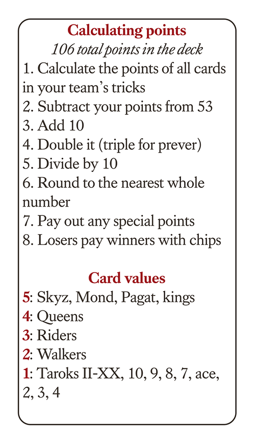

For now this is just some notes, and not an actual tutorial
Taroky originated in the Czech Republic as a Type III Tarot card game. It is important to note the distinction between Tarot card games and the occult Tarot cards. The original card games have historical roots as far back as 1456, whereas occult Tarot cards did not exist until the late eighteenth century. Taroky predates Tarot cards and is associated with it only in name and has nothing to do with the occult.
As a Type III Tarot Card game, Taroky consists of a 54 card deck which contains the 4 French suits (Spades, Clubs, Hearts, and Diamonds) along with 21 Trump cards (known as Taroks) and the Fool card, known as the Skyz, which is the highest trump/Tarok. Each of the four French suits consists of the Court (A King, Queen, Rider, and Jack) along with 4 standard cards (for the black suits, these are 7, 8, 9, and 10, whereas the red suits are ace, 2, 3, and 4). Each card has an associated point value which is standard across all Type II and Type III Tarot Card games.
5 Points: Kings, Skyz, XXI (Mond), and I (Pagat)
4 Points: Queens
3 Points: Riders
2 Points: Jacks / Kluks
1 Point: Everything else (other Trumps and colors)
The initial page is a list of rooms. Each room has 4 dots inside it. Hollow dots indicate Robot players, filled dots indicate Human players. To join a room, click on one which has an empty slot. The Custom room is used when, after a game, you copied the save code. You can paste the save code into the custom room in order to replay that game.
If, instead of playing, you would prefer to watch a game, simply right-click (long press on mobile) on a room to join its audience. If you don't want a player to join the audience for your room, just lock the room.
If you join a room which previously had no players, you become the room host. This means you can edit the various settings before starting the game. Difficulty adjusts the bots play style (they aren't very good yet, since most difficulties have yet to be implemented) Timeout adjusts the amount of time each player is given before their turn is taken automatically (use 0 or -1 to disable it. It has a minimum of 20 seconds otherwise) Lock Room can be used to prevent players from joining your game. Rooms cannot be unlocked.
As the host, press "Start Game" to start the game If the back of a card appears on your screen, hover your mouse over it (tap on mobile) then move your mouse around to shuffle the deck. Once you're done shuffling, move your mouse off of the card. If you are prompted to cut the deck, click on the button which matches your choice
Above your hand and the table, a few bits of text let you know what the current action is. First, the player number or account name of whoever turn it is. Then, what action they are currently preforming. If the timeout is enabled, it will also show a count-down in seconds until the action is automatically completed
Below your hand is the round information, including who Povinnost is, who Prever is, what money cards have been called, who is signed in to accounts, and who Povinnost is playing with. This information is placed here for your convenience.
If, for whatever reason, your game gets stuck on an action, you are missing vital information which you should have, or you otherwise aren't caught up with the game, clicking "Ping Server" should fix the issue The server will automatically update you with all the latest information. Additionally, in the room select screen, you can click Refresh Rooms to see what rooms have changed. However, this is entirely unnecessary as the rooms are updated automatically. Once you join a room, you can leave the room by double-tapping on "Leave Room" You will then be sent to the Join Room screen
Whenever the game prompts you to either discard a card or play a card, many of your cards may turn gray. This is simply because you are not allowed to play or discard those cards. If it seems like all of your cards are gray, try hovering over the clubs and spades to see if you can play any of them. Once you make a choice, simply click (tap, on mobile) on your choice and that card will be played or discarded
BE SURE TO WAIT A SECOND before playing a card. The first card should come up fairly quickly. Cards which are "on the table" are animated in one every 5 seconds. This can lead to a laggy animation if players play faster than that. For example, the bots play instantly and so will cause your turn to arrive before the cards have loaded. In this case, just wait a few seconds for the cards to load in. This is why the minimum timeout is 20 seconds. Once all the cards appear, make your choice. Similarly, if you leave the room while cards are on the table, they should disappear within a few seconds. This is one of those things which is under constant improvement. Expect a new table system, but maybe not soon.
The accounts system is handled separately by Mach SSO. The login, sign up, and verification processes are all through sso.smach.us The Sign In link should work fluidly. It should automatically open in a new tab, and, when the login is complete, close that tab. Error messages are displayed on Mach Tarok, should an error occur. If Mach SSO is ever unavailable, but Mach Tarok is available, simply skip logging in, as Guest accounts work fine.
Also, every single standard set by OWASP is followed in the accounts' system, so, if your 12+ character password is secure, you can rest assured your Taroky account won't be stolen.
An up-to-date status of the number of players online is displayed on the footer of the main page. (If you're the only one online, it will inform you that 1 Players is online, but that should be the only issue) To access the source code, open an issue, or otherwise leave a comment about the game, open the GitHub link and leave your comment there
Taroky is a turn-based point-trick game. The goal of Taroky is to earn as many chips as possible throughout a game. Each game contains several rounds, and usually lasts for an hour of playtime. Within each round, there are three main phases:
The Setup Phase, where the cards are shuffled and dealt out, Povinnost determined, Prever and money cards are called, Valat, Contra, and Pagat on the End are determined
The Play Phase, which consists of twelve consecutive tricks
The Cleanup Phase, where points are counted and chips are paid
During each round, the goal is to earn chips through winning points during each trick. Chips can only be earned through money cards, penalty payouts, and winning the round. The game starts with a player shuffling the cards, the cut, and the deal
In an ordinary game, the deck usually goes to the most senior player at the table. In MachTarok, however, the deck instead defaults to the first player to join the room, called the room host Some players prefer to cut the deck and each choose a card, where the highest valued card decides the first player.
Regardless, the chosen player shuffles the deck and passes the deck clockwise to be cut. In most cases, the deck is then cut and passed back to the original player. However, when the cutting player feels that the deck has not been shuffled properly or, as is usually the case, is on a losing streak, the cutting player may decide from several various other choices. This is called "Knocking the deck" or simply a "knock", since the cutting player knocks on the deck and passes it back without cutting it. The cutting player may then choose from among these options:
Deal by ones - normally chosen to incur a misdeal penalty, as it is the most difficult way to deal
Deal by twos
Deal by threes
Deal by fours
Deal by sixes - which is essentially just skipping the cut
Deal by twelves straight
Deal by 3, 4, 5
Deal by twelves choice
No matter the choice, the dealer then takes the top six cards of the deck, in order, and places them in the center of the bord. This is known as the Talon, and will be important later. The dealer then moves counter-clockwise around the board, so that the dealer is the last player to receive cards, dealing either six or the chosen number of cards to each player. No matter the case, each player will end up with twelve cards in hand. In the case of twelves choice, the dealer places the remaining cards in piles of twelve and players choose which pile to receive in the same order they would have been dealt to, with the dealer receiving the last pile.
Once the cards are dealt, Povinnost (which means "Authority") is determined. Povinnost is the lead player of the round, and has several special characteristics which are important later. For the first round in each game, Povinnost is the player who was dealt the II. In the event the II was dealt to the Talon, the player with the III is instead Povinnost, on up until VIII, which is the highest possible. Each round after the first, Povinnost instead rotates counter-clockwise, such that Povinnost will be the dealer for the next round, then will cut the round after.
The first action made each game is declaring Povinnost and Prever. Povinnost will announce "Povinnost, can I go?", "Going 4", or simply "Povinnost" This essentially means "I would like to play with a partner", however Povinnost later may have the chance to play solo Each other player, in turn (counter-clockwise) then may either say "Go ahead" / "Pass" or "Prever" / "I'm going 3" / "I'm playing by myself" Prever, sometimes written prefer or preferanc, meaning "check" "choice" or "preference" is each player choosing to play alone against the other three players The rules after here diverge quite quickly
In the event that a player calls Prever, that player receives the top three cards of the Talon. Prever may then choose to reject these cards and take the bottom three cards from the Talon. Yet again, Prever may reject these cards and return to the top three cards. Two important things happen whenever Prever rejects a set of cards
First, the cards are shown to the other players
Second, the cost of losing for Prever doubles
Upon deciding, Prever then places the three chosen cards into the hand, and the other three cards are given to the opposing team's discard pile.
If, instead, no player wishes to play Prever, Povinnost receives the top four cards of the Talon. The remaining cards are given, counter-clockwise, to the second and third players Either of these players may, before seeing the card, offer it to the fourth player, who can either accept or reject it. If it is rejected again, the original player must draw it. After all the cards are drawn, players discard down to twelve cards
Each player, whether Prever, Povinnost, or other, must discard down to twelve cards before the game begins. The players may not ever discard any cards worth 5 points, including kings. The players may not discard trump cards unless only trump cards and 5 point cards remain. If a player must discard a trump card, that card is then revealed to all other players. A common tactic for discarding is known as "voiding" in a suit, which means discarding all cards of that suit so that a trump can be played later In MachTarok, this is done simply by clicking on a non-gray card during the discard action
After discarding, Povinnost leads the way in calling. If Prever is being played, Povinnost calls point cards first. Otherwise, Povinnost begins by announcing a partner card. Partner cards start at the XIX. If Povinnost has the XIX, either the XIX or the XVIII may be called. If Povinnost has both the XIX and the XVIII, instead the XVII may be called, down to the XV. If Povinnost has all the trumps XIX-XV, Povinnost must call the XIX. If Povinnost has the XIX, XVIII, and XVII, Povinnost may only call the XIX or XVII, not the XVIII. There is a maximum of two choices. When Povinnost calls a card which another player has, that player becomes Povinnost's partner, although that is not revealed yet. Otherwise, when Povinnost has the card which was called, Povinnost plays alone, although there are some important differences between this and playing Prever
After the partner card is determined, money cards (aka point cards) are called. There are eight different types of money cards, which are helpfully laid out on this card:
TODO I actually couldn't find the file so I'll get to it later
Povinnost also has the choice to skip calling Bida or Uni, in order to prevent Flecking Chips are paid, then a few additional things may be called
First off, Valat (literally "to roll") may be called. A player who calls Valat must win every single trick or otherwise pay 40 chips If, however, that player's team succeeds in winning every trick, they receive 40 chips
Next, Contra ("contrary" or "against") may be called. Who is allowed to call contra is a very complicated process, but here's the gist of it: During a prever game, Prever's opponents may call contra. If they do, Prever may call rhea-contra. If prever does, the opponent's may call supra-contra. Otherwise, Povinnost's opponents may call contra. If they do, Povinnost's team may call rhea-contra. If they do, Povinnost's opponent's may call supra-contra. During a Valat game, the players who are not on Valat's team may call, etc. Each time Contra is called, the payout doubles. This means if contra, rhea-contra, and supra-contra are all called, the payout is 2x2x2 = 8 times what it normally would be
Finally, if Valat was not called (or in some variants even if it was), the Pagat may be called on the End, known as I on the End. Only the player who has the Pagat may call this. What this means is that the Pagat must be held until the last trick, must be played on the last trick, and no other players can play trumps on the last trick, even Pagat's teammate If any of these conditions are not met, Pagat's team pays 4 chips (some rules say as many as 20) to the opposing team. If all the conditions are met, however, Pagat's team receives 4 chips
Finally, down to business. The game starts with Povinnost leading a card. This is true even for Prever games. Povinnost may lead any card, although if Povinnost has a strong hand or someone called Tarocky/Taroky, it is customary to lead a low trump and "look for the partner" Each other player, in counter-clockwise order, must then follow. If a color was lead and a player does not have that color, a trump must be played. If the player has neither that color not a trump, instead any card may be played. After all four cards are played, whoever played the highest card wins the trick. Cards are ranked in this order:
Trump, starting with the Skyz, then going down XXI, then XX, etc.
The lead color's court, starting with the King, then Queen, then Rider, then Jack
Finally, the lead color, in black being 10, then 9, then 8, then 7 or in red being 4, 3, 2, 1 (Some players play where the Ace is higher than the other three)
Any cards which are neither trump nor the lead color cannot win. The winner of the trick then collects the cards by placing them into that player's discard pile Then, the winner leads the next trick, and these same rules are followed until all twelve tricks have been played
After the twelfth trick is collected, each team counts their points based on the point values of each card
There are a total of 106 points available, so a team must have 54 in order to win. If both teams have 53, then Prever's team loses. If there is no Prever, then Povinnost's team loses. If one team won all the tricks, then that team has Valat'd and earns 20 chips each. If it was called, then they earn 40 chips each instead The difference from 53 is taken (0 in the case of a tie) Ten points are added (10 in a tie) That total is doubled, or tripled in a game of Prever (20 or 30 in a tie) Then, that number is rounded to the nearest 10 (2 or 3 chips in a tie) If any number of contras were called, they are applied here, for a maximum of times 8 Finally, if the Pagat (the I) was played on the last trick, bonuses are applied here. If another trump was played with it, Pagat's team loses 2 chips (if called, 4) Otherwise, Pagat's team earns 2 chips (if called, 4) The losing team then pays the owed chips to the winning team In the case of a 3v1, each of the 3 pay to the 1 In the case of a 1v3, the 1 pays to each of the 3
Congratulations, you just finished reading all the rules to Taroky. Now get going and play a few games!